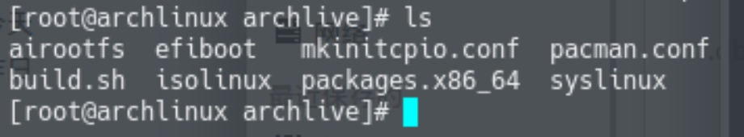
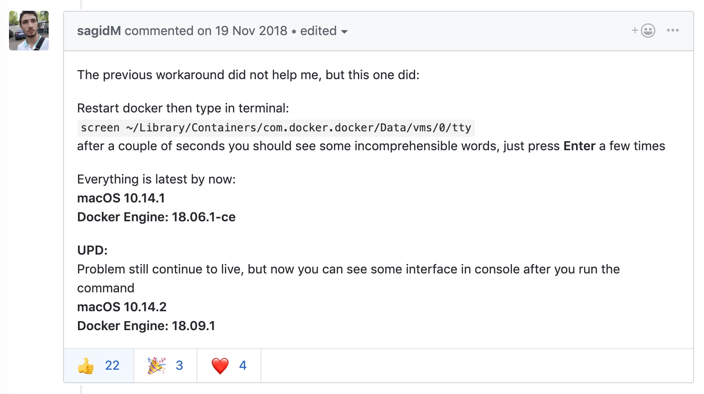

Archiso
参考官方文档，自制 archlinux 可启动镜像。这样就可以拥有自己的 linux 发行版了。
https://wiki.archlinux.org/index.php/Archiso
修改 pacman.conf，添加自定义存储库 
将 customrepo 的内容改为 archlinuxcn
#[customrepo]
SigLevel = Optional TrustAll
Server = file:///home/user/customrepo/$arch
改为
#[archlinuxcn]
SigLevel = Optional TrustAll
Server = https://mirrors.ustc.edu.cn/archlinuxcn/$arch
archlinux 安装 vmtools 遇到坑了怎么办
使用这个脚本即可：https://github.com/rasa/vmware-tools-patches
$ git clone https://github.com/rasa/vmware-tools-patches.git
$ cd vmware-tools-patches
$ ./patched-open-vm-tools.sh
Docker for Mac 卡在 "is starting"
解决方案来自：https://github.com/docker/for-mac/issues/2420 中的sagidM的回复
本机环境： macOS 10.14.4 Docker Engine: 18.09.2

大意是，打开终端然后输入screen ~/Library/Containers/com.docker.docker/Data/vms/0/tty，接着回车几次，就 ok 了。事实证明这个方法确实能解决问题。如果你输入一次没什么反应，就多开几个终端标签多试几次就可以了。


Copyright © 2015 Powered by MWeb, Theme used GitHub CSS.